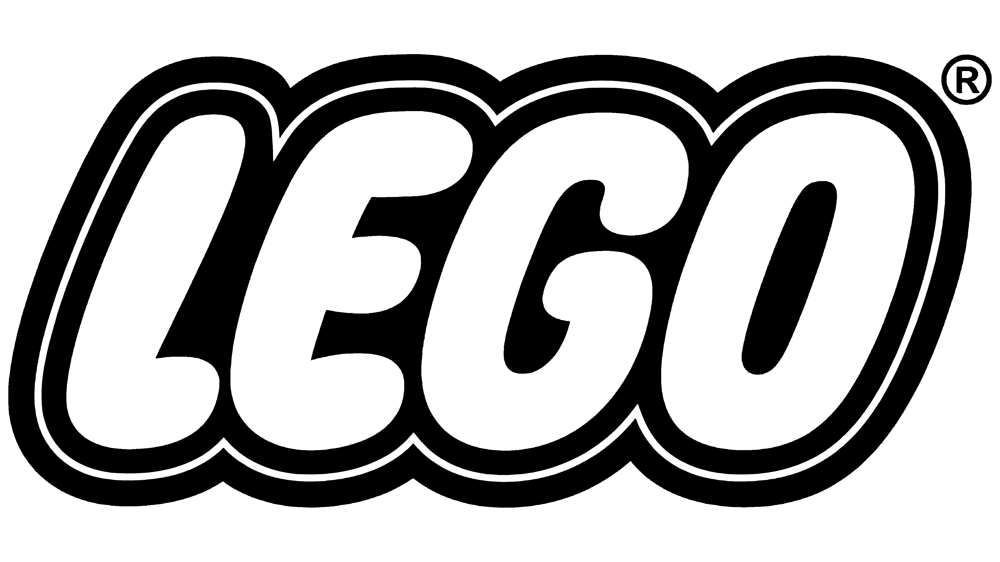
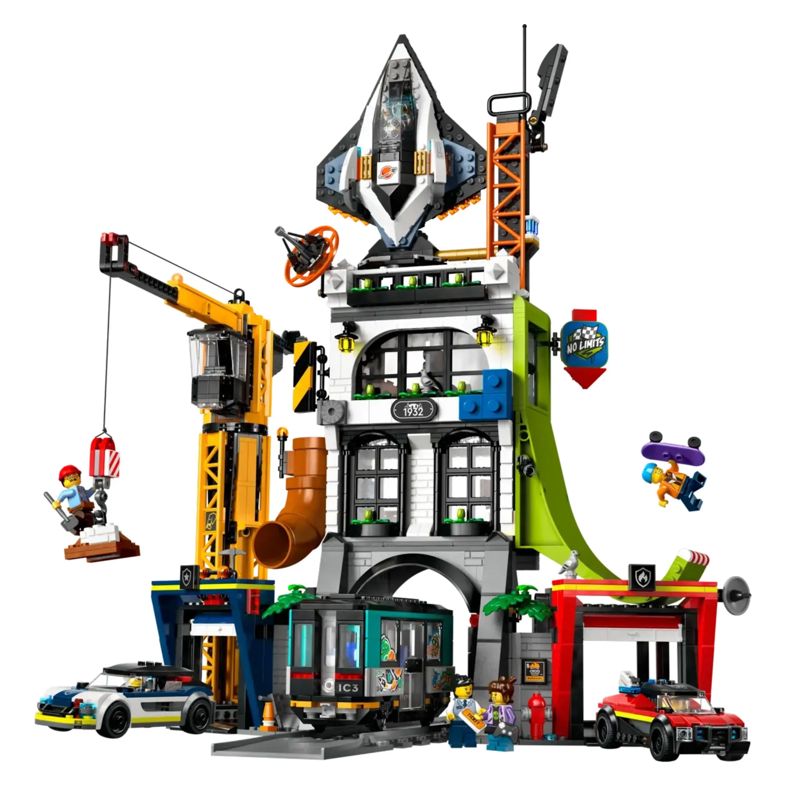
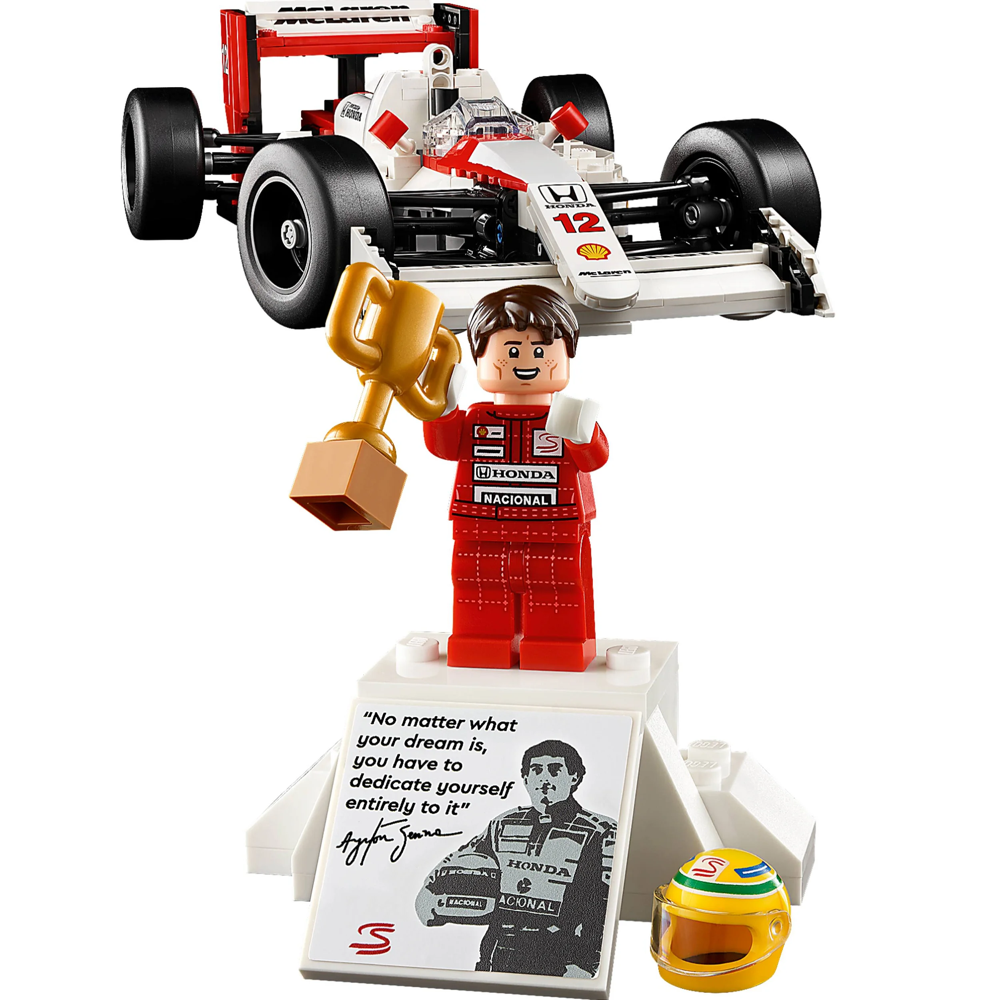

História
Conheça como uma pequena empresa dinamarquesa, fundada por Ole Kirk Kristiansen, se transformou em uma das marcas de brinquedos mais conhecidas do mundo.
Conhecer história
Imagine, construa e crie seu próprio mundo.
A LEGO é muito mais do que uma marca de brinquedos. Ao longo de sua história, seus blocos de montar conquistaram pessoas de diferentes idades, permitindo criar construções, personagens, veículos e mundos inteiros.
Neste site, você poderá conhecer a história da empresa, descobrir suas principais coleções e explorar alguns dos conjuntos que fazem parte desse universo.
Conheça como uma pequena empresa dinamarquesa, fundada por Ole Kirk Kristiansen, se transformou em uma das marcas de brinquedos mais conhecidas do mundo.
Conhecer história
Descubra diferentes temas, como cidades, veículos, ficção científica e construções voltadas para colecionadores.
Ver coleções
Veja alguns conjuntos LEGO, suas características e as diferentes experiências de construção oferecidas por cada linha.
Ver produtosUma das características mais interessantes dos blocos LEGO é a possibilidade de combinar peças de diferentes maneiras. Uma mesma coleção de blocos pode dar origem a inúmeras construções, dependendo da imaginação de quem está criando.
Casas, carros, cidades, robôs e até grandes cenários podem ser desenvolvidos com peças de montar. Essa liberdade transforma cada construção em uma experiência diferente.